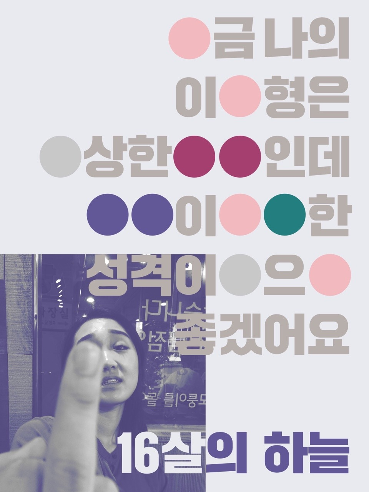

본문설명태그
<!doctype html>
<html>
<head>
<title>WEB1 - html</title>
<meta charset="utf-8">
</head>

본문태그
<body>
  <h1><a href="index.html">about</a></h1>
  <ol>
    <li><a href="1.html">portfolio에 대해서</a></li>
    <li><a href="2.html">about나는 누구인가</a></li>
    <li><a href="3.html">contact</a></li>
  </ol>

  <h1><strong>about</strong></h1>

  <p><h2><strong>페이스북에서 집행한 <u>모바일 전용 광고</u>입니다.</strong><br>TVCF를 모바일용으로 재편집하고 모바일에 맞는 트렌지션과
  기법을 이용해 플랫폼에 맞는 컨텐츠를 만들었습니다.</P>
  
  <p>또 페이스북의 UI 프레임을 이용한 Optimize 형태의 새로운 모바일 광고를 만들었습니다.
  플랫폼의 특성에 맞춘 모바일 전용 광고입니다.</h2></p>
</body>
  /html>
